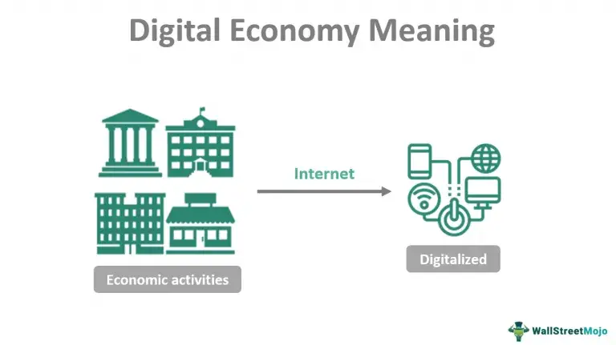

DBM
Building blocks of the digital economy.
- The Internet:
- Enables firms to offer goods for sale and allows consumers to browse and purchase products they need.
- E-mail:
- It is used to send information, requests, and correspondence, enhancing business efficiency.
- Digital Automation:
- This automation streamlines operations and reduces manual effort.
- Digital Payments:
- Includes methods like credit cards, Apple Pay, Google Pay, Bitcoin, and bank transfers. These facilitate a shift toward a cashless society, making transactions seamless and efficient.
- Includes methods like credit cards, Apple Pay, Google Pay, Bitcoin, and bank transfers. These facilitate a shift toward a cashless society, making transactions seamless and efficient.
- Automation (AI and Advanced Technologies):
- Relies on artificial intelligence, mass electronic data, and automated technologies to enhance productivity and decision-making.
- Social Media:
- Acts as a platform for sharing recommendations and reviews about businesses, influencing consumer behavior.
Define Digital economy.

The digital economy refers to an economy that is based on digital technologies, particularly the internet, and the various activities, transactions, and interactions that occur within it.
At its core, the digital economy includes online commerce (e.g., e-commerce platforms like Amazon or Alibaba), digital services (e.g., streaming platforms like Netflix, cloud computing, or software-as-a-service), and the infrastructure that supports them (e.g., telecommunications, data centers, and internet connectivity.
Advantages of digital economy.
- Greater Information Access: Consumers gain more choice and information through the internet, easily comparing prices and accessing details instantly, such as for travel or shopping.
- Time Savings: Online ordering and delivery (e.g., office supplies arriving next day) reduce the need for physical trips, cutting labor costs and boosting efficiency.
- Reduced Costs: Businesses save on physical infrastructure by operating online, bypassing retail middlemen and offering lower prices direct from warehouses.
- Personalization: Digital platforms enable tailored products (e.g., custom clothes via 3D printing), meeting individual preferences beyond what traditional stores can stock.
- Lower Barriers to Entry: New firms can enter markets with innovative ideas, creating services like online grocery delivery or dating apps, challenging established players.
- Data Insights: Mass data collection provides governments and businesses with real-time economic and social insights, such as tracking COVID-19 hotspots.
- Global Opportunities: Developing regions, like India, benefit from job creation (e.g., programming), as digital work transcends geographic limits.
- Work Flexibility: Remote work, enabled by digital tools, reduces commuting, supports work-life balance, and proved vital during COVID lockdowns, cutting congestion and pollution.
Disadvantages of the digital economy.
- Monopoly Power: Giants like Amazon, Google, and Facebook dominate markets, using their influence to charge high rates or undercut competitors, reducing fair competition.
- Less Community: Online shopping replaces local hubs like bookstores, diminishing physical interactions and community experiences tied to traditional commerce.
- Addictive Technology: Excessive time on social media or browsing can outweigh time-saving benefits, overwhelming users with information and hindering decision-making.
- Privacy Issues: Data harvesting by companies like Facebook raises concerns, as personal information is exploited for targeted ads, often without full user consent.
- Labor Law Gaps: The rise of freelancers (e.g., Uber, Deliveroo drivers) on zero-hour contracts cuts costs but leaves workers without protections like sick pay.
- Graphic Content Spread: Social media’s anonymity fuels the spread of harmful content, such as conspiracy theories or violence, impacting well-being.
- Job Disruption: Rapid digitalization and AI threaten traditional jobs (e.g., retail), causing structural unemployment and widening inequality between skilled and unskilled workers.
- Environmental Costs: Data centers consume significant electricity, and planned obsolescence (e.g., frequent phone upgrades) increases resource use and waste, countering "green" assumptions.
Define E-Commerce.
E-commerce, short for electronic commerce, refers to the buying and selling of goods and services over the internet. It involves the exchange of data or currency to process a transaction between a buyer and a seller.
Key Characteristics of E-commerce:
- Platform: Operates via the internet, enabling businesses to offer goods (e.g., via websites like Amazon) and consumers to browse and purchase them.
- Transactions: Facilitated by digital payment methods such as credit cards, Apple Pay, or bank transfers, supporting a cashless exchange.
- Scope: Includes business-to-consumer (B2C) sales (e.g., online shopping), business-to-business (B2B) transactions, and even consumer-to-consumer (C2C) interactions (e.g., eBay).
Explain Types of E-Commerce.

E-commerce, short for electronic commerce, refers to the buying and selling of goods and services over the internet. It involves the exchange of data or currency to process a transaction between a buyer and a seller.
E-commerce operates in different forms, and here are the different types of e-commerce:
- Business-to-Consumer (B2C):
- This type of e-commerce involves companies selling their products or services directly to the end-user, the consumer who needs it.
- This is the most common type of e-commerce, and it includes online retailers such as Amazon, Walmart, and Target.
- Business-to-Business (B2B):
- This type of e-commerce involves businesses selling their products or services to other businesses. The buyer often resells the products to the consumer. B2B e-commerce includes companies such as Alibaba, which connects businesses with suppliers.
- Consumer-to-Consumer (C2C):
- This type of e-commerce involves consumers selling products or services to other consumers.
- This type of e-commerce is facilitated by online marketplaces such as eBay, Etsy, and Craigslist.
- Consumer-to-Business (C2B):
- This type of e-commerce involves consumers selling their products or services to businesses.
- This type of e-commerce is common in the freelance industry, where individuals offer their services to businesses that need them.
- Business-to-Government (B2G):
- This type of e-commerce involves businesses selling their products or services to government agencies.
- This type of e-commerce is common in the defense industry, where businesses sell their products to the government.
- Consumer-to-Government (C2G):
- This type of e-commerce involves consumers selling their products or services to government agencies.
- This type of e-commerce is common in the freelance industry, where individuals offer their services to government agencies that need them.
Explain advantages and disadvantages of E-Commerce.
Advantages of E-Commerce
- Wider Market Reach: E-commerce allows businesses to reach a global audience, breaking geographical barriers that limit traditional retail. This capability is particularly beneficial for small businesses looking to expand their customer base without the significant investment required for physical stores.
- Cost-Effectiveness: Operating online typically incurs lower overhead costs compared to maintaining a physical storefront. Businesses can save on rent, utilities, and staffing, allowing them to allocate resources more efficiently.
- Convenience: E-commerce offers 24/7 accessibility, enabling customers to shop at any time from anywhere. This convenience enhances customer satisfaction and can lead to increased sales.
- Improved Customer Engagement: Online platforms facilitate real-time interaction with customers through personalized marketing strategies, such as targeted advertisements and product recommendations based on browsing history.
- Scalability: E-commerce businesses can scale operations more easily than traditional retailers, allowing them to adapt quickly to market demands and expand their product offerings without significant logistical challenges.
Disadvantages of E-Commerce
- Security Risks: E-commerce faces significant threats from cyber criminals, including hacking and phishing attacks that can compromise sensitive customer data. This poses a risk not only to customers but also to the business's reputation.
- Dependence on Technology: E-commerce operations rely heavily on technology, which can be costly and complex to maintain. Technical issues or downtime can disrupt sales and affect customer trust.
- Lack of Physical Interaction: Customers cannot physically inspect products before purchase, which may lead to dissatisfaction if the items do not meet expectations upon delivery. This aspect can deter some consumers from online shopping.
- Privacy Concerns: The requirement for personal information during transactions raises privacy issues. Customers may hesitate to share sensitive data due to fears of misuse or data breaches.
- Increased Competition: The low barrier to entry in e-commerce means that businesses face fierce competition, making it challenging to stand out in a crowded marketplace.
Explain five value delivery methods for E-commerce.
- Direct-to-Customer (D2C):
- Brands sell directly to consumers online, bypassing middlemen, fostering loyalty and rapid growth.
- Example: New-generation consumer brands cutting out intermediaries.
- White Label and Private Label:
- White labeling applies a brand to a distributor’s product, while private labeling creates exclusive products via manufacturers.
- Example: Retailers branding generic goods.
- Wholesaling:
- Retailers offer bulk products at discounted rates, traditionally B2B but now also B2C for budget-conscious buyers.
- Example: Online stores providing wholesale deals to consumers.
- Drop Shipping:
- Retailers sell products fulfilled by third-party suppliers, acting as middlemen without holding inventory. Easy-to-use tools integrate global supplier inventories.
- Example: Drop shippers on platforms like Shopify.
- Subscription Service:
- Businesses offer recurring deliveries of goods/services (e.g., groceries, media) for convenience and savings.
- Example: Monthly book or grocery subscriptions adapted to modern industries.
Define Marketplace.

A marketplace, in the context of e-commerce, is an online platform that connects buyers and sellers, facilitating the exchange of goods, services, or information.
It serves as a digital environment where multiple vendors or individuals can list their offerings, and customers can browse, compare, and purchase them, typically all within a single platform.
Explain Marketing Research.
Market research is the systematic process of gathering, analyzing, and interpreting information to help businesses or individuals assess the viability of a product or service and make informed decisions.
Purpose and Importance
- Understanding Consumer Behavior: It builds a picture of how consumers think, choose, and interact with products or services.
- Evaluating Market Fit: It determines how well a product or service meets market demands.
- Sizing the Market: It estimates the potential market size for a specific offering.
- Strategic Planning: It aids in business planning, marketing strategy development, and identifying growth opportunities.
- Competitive Analysis: It helps identify major competitors and establish a unique value proposition (UVP) to stand out.
- Problem-Solving: It addresses marketing challenges and uncovers actionable insights.
Explain Types of Marketing Research.
Marketing research encompasses various methods to gather insights about markets, customers, and competitors. These methods can be used individually for specific purposes or combined for a comprehensive understanding.
- Competitor Analysis
- What it is: A method to study competitors offering similar products or services, or those with potential to do so.
- Example: Comparing your product’s price and quality to a rival’s to adjust your offerings or marketing.
- Benefit: Helps anticipate competitors’ moves and build a competitive edge.
- What it is: A method to study competitors offering similar products or services, or those with potential to do so.
- Interviews
- What it is: A qualitative, one-on-one method between an interviewer and participant.
- How it works: Conducted via phone, online, or face-to-face; can be open-ended or structured with specific questions.
- Purpose: Gathers in-depth insights into customer needs, opinions, or feedback, ideal for exploratory research like new product development or market evaluation.
- Example: Interviewing customers post-launch to assess satisfaction.
- What it is: A qualitative, one-on-one method between an interviewer and participant.
- Focus Groups
- What it is: A moderated group discussion where participants interact and share ideas on a topic.
- Purpose: Generates collective insights and brainstorming, useful for testing concepts or understanding group dynamics.
- Example: A focus group discussing reactions to a new ad campaign.
- What it is: A moderated group discussion where participants interact and share ideas on a topic.
- Surveys
- What it is: A scalable, often quantitative method to collect data from a targeted audience.
- Purpose: Measures brand awareness, customer preferences, market trends, or competitive standing; supports segmentation and campaign planning.
- Example: An online survey gauging interest in a new product feature.
- What it is: A scalable, often quantitative method to collect data from a targeted audience.
How to Conduct Market Research.
- Define Objectives
- What to do: Clearly outline what you want to learn (e.g., customer preferences, market size, competitor strengths).
- Example: “Understand why customers prefer competitor X’s product.”
- Collect Data
- Primary Data: Gather your own data through:
- Surveys: Online or phone questionnaires.
- Interviews: One-on-one discussions (phone, online, or in-person).
- Focus Groups: Moderated group sessions.
- Secondary Data: Use existing sources like:
- Online reports, government sites (e.g., Census.gov), or industry studies.
- Primary Data: Gather your own data through:
- Analyze Data
- What to do: Organize and interpret findings using tools or techniques.
- Example: Identify that 70% of respondents value price over quality, per survey results.
- Apply Insights
- What to do: Use findings to make decisions—adjust products, target new segments, or refine marketing strategies.
- Example: Lower prices based on survey feedback to attract budget-conscious customers.
- Monitor and Refine
- What to do: Track results (e.g., sales, web traffic) post-implementation and adjust if needed.
- Example: If sales don’t rise after price cuts, survey again to tweak the approach.
Explain E-Learning.
E-Learning, short for "electronic learning," refers to the use of digital technologies, primarily the internet, to deliver educational content and facilitate learning outside of traditional classroom settings.
Key Features of E-Learning:
- Digital Delivery: Content is delivered via electronic devices such as computers, tablets, or smartphones, typically through online platforms, apps, or software.
- Variety of Formats: E-Learning can include text-based lessons, videos, interactive quizzes, webinars, podcasts, virtual simulations, and more.
- Accessibility: Learners can access materials anytime, anywhere, as long as they have an internet connection, making it highly convenient compared to physical classrooms.
- Interactivity: Many e-learning systems incorporate tools like discussion forums, live chats, or gamified elements to engage learners.
- Scalability: It allows institutions or instructors to reach a global audience without the limitations of physical space.
E-Learning platforms
- Coursera
- Udemy
- NPTEL
- EdX
Digital Five Forces in details.
The Digital Five Forces framework is an adaptation of Michael Porter's traditional Five Forces model, tailored to analyze the competitive dynamics in the digital economy.
This framework helps businesses understand the impact of digital technologies on their industry and how to navigate the challenges and opportunities they present.
- Digital Substitutes
- Definition: Digital substitutes refer to alternative products or services that are enabled by digital technologies and can replace traditional offerings
- Example: Streaming services like Netflix have become digital substitutes for traditional cable TV.
- Digital New Entrants
- Definition: Digital new entrants are new companies or startups that leverage digital technologies to enter a market, often with lower barriers to entry compared to traditional businesses.
- Example: Airbnb entering the hospitality industry without owning any physical properties.
- Digital Rivalry
- Definition: Digital rivalry refers to the intensity of competition among existing players in a market, amplified by digital tools and platforms.
- Example: E-commerce platforms like Amazon and Walmart competing fiercely in online retail, leveraging data analytics and AI to enhance customer experience.
- Digital Supplier Power
- Definition: Digital supplier power refers to the influence that suppliers of digital technologies, platforms, or services have over businesses.
- Example: Businesses relying on AWS (Amazon Web Services) for cloud infrastructure may face challenges if AWS changes its pricing or service terms.
-  Digital Buyer Power
- Definition: Digital buyer power refers to the increased influence that customers have due to the availability of information, comparison tools, and digital platforms.
- Example: Online shoppers using price comparison websites to find the best deals, putting pressure on retailers to offer competitive pricing.
Explain E-Government.

E-Government (short for Electronic Government) refers to the use of digital technologies, particularly the internet, to deliver government services, information, and interactions to citizens, businesses, and other government entities.
Categories Of E-Government
- Government-to-Citizen (G2C)
- Government-to-Business (G2B)
- Government-to-Government (G2G)
- Government-to-Employee (G2E)
Opportunities in Digital Business.

- Digital Disruption from Within:
- Established companies can disrupt themselves by embracing digital transformation.
- For example, Steve Jobs disrupted Apple's own successful iPod by introducing the iPhone. Companies need to innovate internally to stay ahead of digital-native competitors.
- Showrooming and Webrooming:
- Showrooming: Consumers browse products in physical stores but buy them online.
- Webrooming: Consumers research products online but purchase them in-store.
- Digital Workforces and New Ways of Working:
- Startups and even established companies can leverage small, agile teams that work on a project basis.
- This approach allows employees to work on projects they are passionate about, leading to higher engagement and better outcomes.
- The Internet of Things (IoT):
-  IoT connects devices, enabling data-driven decision-making, automation, and new revenue streams.
- Micromoments:
- Micromoments are instances when consumers turn to their devices to act on a need (e.g., to learn, discover, or buy). Businesses can capitalize on these moments by being present and relevant.
- For example, 50% of consumers who conduct a local search on their smartphone visit a store within a day, and nearly 20% make a purchase within a day.
Challenges in Digital Business.
- Rising Customer Expectations:
- Customers demand faster, more personalized, and seamless digital experiences.
- Talent Shortage:
- The rapid pace of digital transformation has created a skills gap, with businesses struggling to find and retain talent with expertise in areas like data science, AI, cybersecurity, and digital marketing.
- Omni-Channel Complexity:
- Delivering a consistent and integrated experience across multiple channels (e.g., online, mobile, in-store) is complex and resource-intensive.
- Big Data and Privacy:
- While big data offers valuable insights, managing and protecting it poses significant challenges, especially with increasing regulatory scrutiny and consumer concerns about privacy.